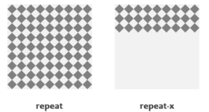

CSS – Njohuri themelore
CSS është teknologjia kryesore prezantuese që përdoret në krijimin Ueb Faqeve.

CSS është akronim nga Cascading Style Sheets. CSS është një gjuhë standarde për stilizim të faqeve që përdoret në përshkrim të prezantimit (d.m.th. paraqitjen dhe formatimin) e ueb faqeve.
Para CSS, gati të gjitha atributet prezantuese të dokumenteve HTML ishin të përmbajtura brenda kodit HTML (specifikisht brenda etiketave HTML); të gjitha ngjyrat e shkronjave, stilet e sfondit, radhitjet e elementeve, kufijtë dhe madhësitë duhej të përshkruheshin qartë në HTML.
Si rezultat, zhvillimi i ueb sajteve të mëdha u bë një proces i vështirë dhe i shtrenjtë, pasi stilizimi duhet shtuar duke u përsëritur në çdo ueb faqe individuale të ueb sajit.
Për të zgjidhur këtë problem, CSS u prezantua në vitin 1996 nga World Wide Web Consortium (W3C), i cili gjithashtu mirëmban standardin e tij. CSS u krijua për të mundësuar ndarjen e prezantimit (stilizimit) dhe përmbajtjes. Tani ueb dizajnerët mund të zhvendosin informacionin e formatimit të ueb faqeve në një fajll stilizimi të veçantë e që rezulton me fajlla më të thjeshtë të HTML-së dhe mirëmbajtje më të mirë.
CSS3 është versioni më i fundit i specifikimeve CSS. CSS3 shton disa veçori të reja në stilizim dhe mundëson avancim të përmirësuar në prezantimet e ueb faqeve.
Shënim: Këto mësime për CSS do t'ju ndihmojë të mësoni bazat e gjuhës më të fundit të CSS3, nga temat më elementare deri tek ato të avancuara hap pas hapi.
Çfarë mund të bëni me CSS?
Ka shumë gjëra që mund të bëni me CSS.
- Mund të zbatoni me lehtësi stilizim të njëjtë në disa elemente.
- Mund të kontrolloni prezantimin e shumë ueb faqeve të një ueb sajti me një fajll të vetëm të stilizimit.
- Mund ta paraqisni të njëjtën faqe ndryshe në pajisje të ndryshme.
- Mund të stilizoni gjendje dinamike të elementeve të tilla si hover, fokus, etj. E që nuk është e mundur ndryshe.
- Mund të ndryshoni pozicionin e një elementi në një ueb faqe pa e ndryshuar shënimin.
- Mund të ndryshoni shfaqjen e elementeve ekzistuese në HTML.
- Mund të transformoni elemente si shkalla, rrotullimi, pjerrtësimi, etj. në hapësirën 2D ose 3D.
- Mund të krijoni efekte animacioni dhe tranzicioni pa e përdorur JavaScript-in.
- Mund të krijoni një version për shtypje të ueb faqeve.
Lista nuk përfundon këtu, ka shumë gjëra të tjera interesante që mund të bëni me CSS.
Përparësitë e përdorimit të CSS-së
Përparësia më e madhe e CSS-së është se lejon ndarjen e stilit dhe paraqitjes nga përmbajtja e dokumentit. Këtu kemi dhënë edhe disa përparësi tjera:
- CSS kursen shumë kohë – CSS jep shumë fleksibilitet për të vendosur vetitë e stilit të një elementi. Mund të shkruani CSS-në një herë; dhe pastaj i njëjti kod mund të zbatohet në grupet të elementeve HTML, e gjithashtu mund të ripërdoret në shumë faqe HTML.
- Mirëmbajtje e thjeshtë – CSS ofron një mjet të thjeshtë për të përditësuar formatimin e dokumenteve dhe për të ruajtur qëndrueshmërinë në shumë dokumente. Për shkak se përmbajtja e tërësisë së ueb faqeve mund të kontrollohet lehtësisht duke përdorur një ose më shumë fajlla për stilzim.
- Faqet lexohen më shpejtë – CSS i mundëson disa faqeve për të ndarë informacionin e formatimit, e që zvogëlon kompleksitetin dhe përsëritjen në përmbajtjen strukturale të dokumenteve. Gjithashtu ndjeshëm zvogëlon madhësinë e transferimit të fajllit, e që rezulton në një lexim më të shpejtë të faqes.
- Stilet më superiore në HTML – CSS ka aftësi prezantuese shumë më të mëdha se HTML dhe siguron kontroll shumë më të mirë të paraqitjes së ueb faqeve. Kësisoj mund t'i jepni një pamje shumë më të mirë ueb faqeve në krahasim me elementet dhe atributet prezantuese të HTML-së.
Përputhshmëri në pajisje të ndryshme – CSS lejon gjithashtu që ueb faqet të optimizohen për më shumë se një lloj pajisjeje ose media. Përdorimi i CSS-it në të njëjtin dokument HTML mund të paraqitet në stile të ndryshme shikimi për pajisje (ekrane) si desktop, telefona inteligjentë, etj.
Këshillë: Tani shumica e atributeve HTML po zhvlerësohen dhe nuk rekomandohet të përdoren. Prandaj është një ide e mirë të përdorni sa më shumë CSS për të rritur përshtatshmërinë e ueb sajtit dhe t'i bëni ato të përputhshme me shfletuesit e ardhshëm.
Hyrje në CSS
Në këtë kaptinë do të mësoni se sa e lehtë është të shtoni informacione për stilin dhe formatimin në ueb faqe duke përdorur CSS. Por, para se të filloni, duhet të keni disa njohuri për HTML.
Përfshirja e CSS-it në dokumentet HTML
CSS mund të bashkëngjitet si një dokument i veçantë ose i shënuar në vetë dokumentin HTML. Ekzistojnë tri metoda për të përfshirë CSS-në në një dokument HTML:
- Stilet inline – Përdorimi i atributit style në etiketën fillestare HTML.
- Stilet e brendshme – Përdorimi i elementit
<style>në pjesën kryesore të dokumentit HTML. - Stilet e jashtëm – Përdorimi i elementit
<link>, për tu lidhur me një fajll të jashtëm CSS.
Shënim: Stilet inline kanë përparësinë më të lartë, dhe stilet e jashtëm kanë më të ultën. Do të thotë nëse specifikoni stilet për një element si në stilin e brendshëm ashtu edhe në atë të stilit të jashtëm, sipas rregullit stili i brendshëm do të mbizotëroj stilin e jashtëm.
Stilet inline
Stilet inline përdoren për të zbatuar rregullat e stilit unik në një element duke vendosur rregullat CSS direkt në etiketën fillestare. Mund t'i bashkëngjitet një elementi duke përdorur atributin style.
Atributi style përfshin një varg të çifteve të vetive dhe vlerave të CSS-it. Çdo palë "veti: vlerë" ndahet me nga një pikëpresje (;), ashtu si do të shkruani në stilin e brendshëm ose të jashtëm, por duhet të jetë e gjitha në një rresht, kësisoj:
Shembull:
<h1 style="color:red; font-size:30px;">Ky është titulli</h1>
<p style="color:green; font-size:22px;">Ky është një paragraf.</p>
<div style="color:blue; font-size:14px;">Kjo është një përmbajtje tekstuale.</div>Përdorimi i stileve inline zakonisht konsiderohet si praktikë jo e mirë. Meqenëse stilet futen direkt brenda etiketës HTML, kjo bën që prezantimi të përzihet me përmbajtjen e dokumentit; gjë që e bën kodin e vështirë për tu mirëmbajtur dhe e mohon qëllimin e përdorimit të CSS-së.
Shënim: Tek stilizimi inline është e pamundur stilizimi i pseudo-elemente dhe pseudo-klasave. Prandaj, duhet të shmangni përdorimin e atributeve të stilit në kodin tuaj. Përdorimi i fajllit për stilizim të jashtëm është mënyra e preferuar për të shtuar stile në dokumentet HTML.
Stilet e brendshme
Stilet e brendshëm zbatohen vetëm në dokumentin në të cilin janë shënuara.
Stili i brendshëm definohet në seksionin <head> të dokumentit HTML duke përdorur elementin <style>. Mund të definoni më shumë se një herë elementet <style> në dokument HTML, por ato duhet të shfaqen midis etiketave <head> dhe </head>.
Shembull:
<!DOCTYPE html>
<html lang="sq">
<head>
<title>Dokumenti HTML</title>
<style>
body { background-color: YellowGreen; }
p { color: #fff; }
</style>
</head>
<body>
<h1>Ky është titulli</h1>
<p>Ky është një paragraf tekstual.</p>
</body>
</html>Këshillë: Tipi i atributit të etiketave <style> dhe <link> (d.m.th. type="text/css") definon gjuhën e stilizimit. Ky atribut është thjesht informues. Mund ta hiqni këtë pasi CSS është gjuhë standarde dhe e paracaktuar e stilizimit në HTML5.
Stilet e jashtëm
Një stil i jashtëm është ideal kur stili zbatohet në shumë faqe të ueb sajtit.
Një fajll me stil të jashtëm mban të gjitha rregullat e stilit në një dokument të veçantë që mund ta lidhni nga çdo dokument HTML në faqen tuaj. Stilet e jashtëm janë më fleksibël, sepse nga një fajll i vetëm, mund të ndryshoni pamjen e tërë ueb sajtit.
Mund të bashkëngjitni fajllat e stilit të jashtëm në dy mënyra – lidhja dhe importimi.
Lidhja e stilit të jashtëm
Para krijimit të lidhjes, duhet së pari të krijojmë një fajll stilizimi. Hapim editorin tuaj të preferuar të kodit dhe krijojmë një fajll të ri. Tani shtypim kodin e mëposhtëm CSS brenda këtij fajlli dhe ruajmë atë si "stili.css".
Shembull:
body {
background: lightyellow;
font: 18px Arial, sans-serif;
}
h1 {
color: orange;
}Një fajll me stil të jashtëm mund të lidhet me një dokument HTML duke përdorur etiketën <link>. Etiketa <link> hyn brenda seksionit <head>, siç mund ta shihni në shembullin vijues:
Shembull:
<!DOCTYPE html>
<html lang="sq">
<head>
<title>Dokumenti HTML</title>
<link rel="stylesheet" href="css/stili.css">
</head>
<body>
<h1>Ky është titulli</h1>
<p>Ky është një paragraf tekstual.</p>
</body>
</html>Këshillë: Nga tri metodat, përdorimi i stilit të jashtëm është metoda më e mirë për definimin dhe zbatimin e stileve në dokumentet HTML. Siç mund ta shihni qartë me stil të jashtëm, fajlli HTML që lidh fajllin e jashtëm CSS kërkon ndryshime minimale në shënjim.
Importimi i stilit të jashtëm
Rregulli @import është një mënyrë tjetër për të ngarkuar një stil të jashtëm. Deklarata @import udhëzon shfletuesin të ngarkojë një stil të jashtëm dhe të përdorë stilet e saj.
Mund ta përdorni në dy mënyra. Më e thjeshtë është brenda seksionit head të dokumentit tuaj. Vini re se, rregulla tjera të CSS-së mund të përfshihen akoma në elementin <style>.
Shembull:
<style>
@import url("css/stili.css");
p {
color: blue;
font-size: 16px;
}
</style>Ngjashëm, mund të përdorni rregullin @import për të importuar një stil brenda një stili tjetër.
Shembull:
@import url("css/modeli.css");
@import url("css/ngjyra.css");
body {
color: blue;
font-size: 14px;
}Shënim: Të gjithë rregullat @import duhet të vendosen në fillim të fletës së stilit. Çdo rregull stili i definuar në stilin e dhënë mbizotëron rregullat kundërshtuese nga stilet e importuar. Sidoqoftë, importimi i një stili brenda një stili tjetër nuk rekomandohet për shkak të çështjes së performancës.
Sintaksa CSS
Një fletë stilesh e CSS-së përbëhet nga një grup rregullash që interpretohen nga ueb shfletuesi dhe më pas aplikohen në elementet përkatëse si paragrafët, titujt, etj.
Rregulli i CSS-së ka dy pjesë kryesore, një selektor dhe një ose më shumë deklarata:

Selektori specifikon se në cilin element ose në cilat elemente në faqen HTML zbatohet rregulli CSS.
Deklaratat brenda bllokut përcaktojnë mënyrën e formatimit të elementeve në një ueb faqe. Secila deklaratë përbëhet nga një veti dhe një vlerë e ndarë nga dy pika (:) dhe që mbaron me pikëpresje (;), e grupet e deklarimit janë të vendosura nga kllapat e mëdha {}.
Vetia është atribut i stilit që dëshironi ta ndryshoni; ato mund të jenë fonte, ngjyra, sfonde, etj. Çdo veti ka një vlerë, për shembull vetia e ngjyrës mund të ketë vlerën blue ose #0000FF, etj.
h1 {color:blue; text-align:center;}Për ta bërë CSS-në më të lexueshme, çdo deklaratë mund ta shënoni në rresht të ri, kësisoj:
Shembull:
h1 {
color: blue;
text-align: center;
}Në shembullin e mësipërm h1 është selektor, color dhe test-align janë veti të CSS-së, pastaj blue dhe center janë vlerat përkatëse të këtyre vetive.
Shënim: Një deklaratë CSS gjithmonë përfundon me një pikëpresje ";", dhe grupet e deklarimit janë gjithmonë brenda kllapave gjarpërore "{}".
Shënimi i komenteve në CSS
Komentet zakonisht shtohen me qëllim që ta bëjnë kodin burimor më të lehtë për t'u kuptuar. Mund t’i ndihmojë zhvilluesit tjetër (ose juve në të ardhmen kur editoni kodin burimor) të kuptojnë se çfarë po përpiqeshit të bënit me CSS. Komentet janë domethënëse për programuesit, por injorohen nga shfletuesit.
Një koment në CSS fillon me /* dhe përfundon me */, siç tregohet në shembullin më poshtë:
Shembull:
/* Ky është një koment në CSS */
h1 {
color: blue;
text-align: center;
}
/* Ky është koment CSS i gjatë
në shumë rreshta */
p {
font-size: 18px;
text-transform: uppercase;
}Gjithashtu mund të komentoni një pjesë të kodit tuaj CSS për qëllime korrigjimi, siç tregohet më poshtë:
Shembull:
h1 {
color: blue;
text-align: center;
}
/*
p {
font-size: 18px;
text-transform: uppercase;
}
*/Ndjeshmëria e shkronjave në CSS (Case Sensivity)
Emrat e vetive në CSS dhe shumë vlera nuk janë të ndjeshme në shkronja të mëdha. Ndërsa, selektorët e CSS-së zakonisht janë të ndjeshëm në shkronja, për shembull, selektori i klasës .maincontent nuk është i njëjtë me .mainContent.
Prandaj, për të qenë më të sigurt, duhet të supozoni se të gjithë komponentet e rregullave të CSS janë të ndjeshëm ndaj shkronjave.
Selektorët
Selektori CSS është një model që përputhet me elementet e një ueb faqeje. Rregullat e stilit të shoqëruara me atë selektor do të aplikohen në elementet që përputhen me modelin e selektorit.
Selektorët janë një prej aspekteve më të rëndësishme të CSS-së, pasi ato ju mundësojnë të përzgjidhni elemente specifike në ueb faqen tuaj që të stilizohen në mënyra të ndryshme.
Disa lloje të selektorëve CSS janë në dispozicion, le t'i hedhim një vështrim:
Selektori universal
Selektori universal, i shënuar me një yll (*), përputhet me çdo element në ueb faqe.
Selektori universal mund të hiqet nëse ekzistojnë kushte të tjera në element. Ky selektor shpesh përdoret për të hequr margjinat dhe mbushjet e paracaktuara nga elementët me qëllim të testimit të shpejtë.
Shembull:
* {
margin: 0;
padding: 0;
}Rregullat e stilit brenda selektorit * do të zbatohen për çdo element në një dokument.
Shënim: Rekomandohet të mos përdorni selektorin universal (*) shumë shpesh në një mjedis paraqitjeje, pasi që ky selektor përputhet me çdo element në ueb faqe e që ushtron presion të panevojshëm në shfletues. Në vend të tij përdorni selektor të tipit element ose selektor të klasës.
Selektorët e tipit të elementit
Një selektor i tipit të elementit përputhet me të gjitha instancat e elementit në dokument me emrin e tipit përkatës të elementit. Të provojmë një shembull për të parë se si funksionon në të vërtetë:
Shembull:
p {
color: blue;
}Rregullat e stilit brenda selektorit p do të zbatohen në çdo element <p> (apo paragraf) në dokument dhe e ngjyrosin atë me ngjyrë të kaltër (blue), pavarësisht nga pozicioni i tyre në pemën e dokumentit.
Selektorët ID
Selektori ID përdoret për të definuar rregullat e stilit për një element të vetëm ose unik.
Selektori ID definohet me shenjën (#), e më pas e ndjekur nga vlera e ID-së.
Shembull:
#error {
color: red;
}Ky stil e paraqet tekstin e një elementi me të kuqe, atributi id i të cilit e ka vlerën error.
Shënim: Vlera e një atributi ID duhet të jetë unike brenda një dokumenti të caktuar – që do të thotë se dy elementë në dokumentin HTML nuk mund të kenë të njëjtën vlerë të ID-së.
Selektorët e klasave
Selektorët e klasave mund të përdoren për të zgjedhur çdo element HTML që kanë atributin class. Të gjithë elementët që kanë atë klasë do të formatohen sipas rregullit të përcaktuar.
Selektori i klasës definohet me shenjën (.), e më pas e ndjekur nga vlera e klasës.
Shembull:
.kalter {
color: blue;
}Rregullat e stilit të mësipërm e bëjnë tekstin me ngjyrë të kaltër për çdo element në dokument që posedon atributin class me vlerë blue. Mund ta bëni atë më të veçantë. Për shembull:
Shembull:
p.kalter {
color: blue;
}Stili brenda selektorit p.blue e bën tekstin e kaltër vetëm për elementet <p> që kanë atributin class me vlerën blue dhe nuk ka asnjë efekt në paragrafët e tjerë.
Selektorët pasardhës
Mund t'i përdorni këto selektorë kur duhet të zgjidhni një element që është pasardhës i një elementi tjetër, për shembull, nëse doni të përzgjidhni vetëm ato etiketa a që përmbahen në një listë të parenditur ul, në vend që të përzgjidhni të gjithë elementët a në atë dokument.
Shembull:
ul.menu li a {
text-decoration: none;
}
h1 em {
color: green;
}Rregullat e stilit brenda selektorit ul.menu li a zbatohen vetëm për ato elemente <a> që gjinden brenda një elementi <ul> që ka klasën .menu, dhe nuk ka asnjë efekt në linqet tjerë brenda dokumentit.
Në mënyrë të ngjashme, rregullat e stilit brenda selektorit h1 em do të zbatohen vetëm për ato elemente <em> që përmbahen brenda elementit <h1> dhe nuk ka efekt në elementët e tjerë <em>.
Selektorët e fëmijëve
Selektorët e fëmijëve përdoren për të zgjedhur vetëm ato elemente që janë fëmijët e drejtpërdrejtë të një elementi.
Selektorët e fëmijëve përbëhet nga dy ose më shumë selektorë të ndarë me simbolin më i madh se (>). Mund ta përdorni këtë selektor, për shembull, për të zgjedhur nivelin e parë të elementeve të listës brenda një liste të futur që ka më shumë se një nivel. Le të shikojmë një shembull për të kuptuar se si funksionon:
Shembull:
ul > li {
list-style: square;
}
ul > li ol {
list-style: none;
}Rregulli i stilit brenda selektorit ul > li zbatohet vetëm për ato elementë <li> që janë fëmijë të drejtpërdrejtë të elementeve <ul> dhe nuk ka asnjë efekt mbi elementët e tjerë të listës.
Selektorët fqinjë sibling
Selektorët fqinjë sibling mund të përdoren për të zgjedhur elementë në të njëjtin nivel. Ky selektor ka sintaksën kësisoj: E1 + E2, ku E2 është shënjestra e selektorit.
Selektori h1 + p në shembullin vijues do të zgjedhë elementet <p> vetëm nëse të dy elementet <h1> dhe <p> ndajnë të njëjtin prind në pemën e dokumentit dhe <h1> i paraprin dhe është fqinj me elementin <p>. Kjo do të thotë se vetëm ata paragrafë që vijnë menjëherë pas çdo titulli <h1> do të përzgjidhen. Le të shohim se si funksionon në të vërtetë ky selektor:
Shembull:
h1 + p {
color: blue;
font-size: 18px;
}
ul.task + p {
color: #f0f;
text-indent: 30px;
}Selektorët e përgjithshëm sibling
Selektori i përgjithshëm sibling është i ngjashëm me selektorin fqinj sibling (E1 + E2), por është më pak i rreptë. Selektori i përgjithshëm sibling përbëhet nga dy selektorë të thjeshtë të ndarë nga karakteri (∼). Mund të shkruhet kësisoj: E1 ∼ E2, ku E2 është shënjestra e selektorit.
Selektori h1 ∼ p në shembullin më poshtë do të zgjedhë të gjithë elementët <p> që paraprihen nga elementi <h1>, ku të gjithë elementët ndajnë të njëjtin prind në pemën e dokumentit.
Shembull:
h1 ∼ p {
color: blue;
font-size: 18px;
}
ul.task ∼ p {
color: #f0f;
text-indent: 30px;
}Grupimi i selektorëve
Shpesh disa selektorë në një fletë të stilit ndajnë të njëjtat deklarata të rregullave të stilit. Mund t'i gruponi në një listë të ndarë me presje për të minimizuar kodin në fletën tuaj të stilit. Gjithashtu ju pamundëson të përsërisni të njëjtat rregulla të stilit disa herë:
Shembull:
h1 {
font-size: 36px;
font-weight: normal;
}
h2 {
font-size: 28px;
font-weight: normal;
}
h3 {
font-size: 22px;
font-weight: normal;
}Siç mund ta shihni në shembullin e mësipërm, i njëjti rregull i stilit font-weight: normal; përdoret nga selektorët h1, h2 dhe h3, kështu që mund të grupohen në një listë të ndarë me presje, kësisoj:
Shembull:
h1, h2, h3 {
font-weight: normal;
}
h1 {
font-size: 36px;
}
h2 {
font-size: 28px;
}
h3 {
font-size: 22px;
}Ngjyrat
Vetia e ngjyrave color definon ngjyrën e tekstit të një elementi.
Për shembull, vetia color e specifikuar në selektorin body definon ngjyrën e paracaktuar të tekstit për të gjithë faqen.
Shembull:
body {
color: #ff5722;
}Shënim: Vetia color normalisht trashëgon vlerën e ngjyrës nga elementi i tyre prind, përveç rastit të elementeve të ankorimit – linqeve. Për shembull, nëse specifikoni vetinë color në elementin body, ajo automatikisht do të atribuohej edhe në tituj, paragrafë, etj.
Definimi i vlerës së ngjyrave
Ngjyrat në CSS specifikohen më shpesh sipas këtyre formateve:
- fjalë kyçe me ngjyra (emra të ngjyrave) – "
red", "green", "blue", "transparent", etj. - vlera HEX (heksadecimale) – "
#ff0000", "#00ff00", etj. - vlera RGB (Red-Green-Blue) – "
rgb(255,0,0)"
CSS3 ka prezantuar disa formate të tjera me ngjyra të tilla si HSL, HSLA dhe RGBA që gjithashtu mbështesin transparencën alfa.
Fjalët kyçe të ngjyrave
CSS definon disa fjalë kyçe me ngjyra të cilat ju lejojnë të specifikoni vlerat e ngjyrave në një mënyrë më të lehtë.
Këto fjalë kyçe kryesore me ngjyra janë: aqua, black, blue, fuchsia, gray, green, lime, maroon, navy, olive, purple, red, silver, teal, white dhe yellow. Emrat e ngjyrave nuk janë të ndjeshëm në llojin e shkronjave që përdoret.
Shembull:
h1 {
color: red;
}
p {
color: purple;
}Ueb-shfletuesit modernë megjithatë praktikisht mbështesin shumë më tepër emra ngjyrash sesa ato që përcaktohen në standardin CSS, por për të qenë më të sigurt duhet të përdorni vlera heksadecimale të ngjyrave në vend të tyre.
Vlerat e ngjyrave HEX
Hex (shkurtesë për heksadecimal) është deri më tani metoda më e përdorur për definimin e ngjyrave në ueb.
Hex paraqet ngjyrat duke përdorur një kod 6-shifror, që i paraprinë karakteri hash (#), si #rrggbb, në të cilin rr, gg dhe bb përfaqësojnë përkatësisht komponentin ngjyrës së kuqe, gjelbër dhe të kaltër.
Vlera e secilit komponent mund të varioj nga 00 (pa ngjyrë) deri në FF (ngjyra e plotë) në shënimin heksadecimal, ose nga 0 deri në 255 në shënimin ekuivalent decimal. Kësisoj #ffffff përfaqëson ngjyrën e bardhë dhe #000000 përfaqëson ngjyrën e zezë.
Shembull:
h1 {
color: #ffa500;
}
p {
color: #00ff00;
}Shënim: Sistemi heksadecimal ose Hex i referohet një skeme numërimi që përdor 16 karaktere si bazë të saj. Përdor numrat 0 deri në 9 dhe shkronjat A, B, C, D, E dhe F që korrespondojnë përkatësisht me numrat dhjetorë 10, 11, 12, 13, 14 dhe 15.
Këshillë: Nëse kodi heksadecimal i një ngjyre ka nga dy vlera të njëjta, ai gjithashtu mund të shkruhet më shkurtë për të shmangur shënimin shtesë, për shembull, vlera e ngjyrave hex #ffffff mund të shkruhet edhe si #fff, #000000 si #000, #00ff00 si #0f0, #ffcc00 si #fc0, e kështu me radhë.
Vlerat e ngjyrave RGB
Ngjyrat mund të definohen edhe në modelin RGB (Red – e kuqe, Green – e gjelbër dhe Blue – e kaltër) duke përdorur shënimin funksional rgb().
Funksioni rgb() përdor tri vlera të ndara me presje, të cilat specifikojnë sasinë e komponentit të ngjyrës së kuqe, të gjelbër dhe të kaltër. Këto vlera zakonisht specifikohen si numra të plotë ndërmjet 0 deri në 255, ku 0 përfaqëson asnjë ngjyrë dhe 255 përfaqëson ngjyrën e plotë ose maksimale.
Shembulli i mëposhtëm specifikon të njëjtën ngjyrë si në shembullin e mëparshëm, por në shënimin RGB.
Shembull:
h1 {
color: rgb(255, 165, 0);
}
p {
color: rgb(0, 255, 0);
}Shënim: Gjithashtu mund të specifikoni vlerat RGB brenda funksionit rgb() në përqindje, ku 100% përfaqëson ngjyrën e plotë dhe 0% (jo thjesht 0) përfaqëson asnjë ngjyrë. Për shembull, mund të specifikoni ngjyrën e kuqe rgb(255,0,0) ose rgb(100%,0%,0%).
Këshillë: Nëse R, G dhe B të gjitha kanë vlerën maksimale 255, d.m.th. rgb(255,255,255), ngjyra do të jetë e bardhë. Po kështu, nëse të gjitha kanalet kanë vlerën 0, d.m.th. rgb(0,0,0), ngjyra do të ishte e zezë.
Ndikimi i vetisë color në kufij dhe skica
Vetia color nuk vlen vetëm për përmbajtjen e tekstit, por për çdo gjë në plan të parë që merr një vlerë të ngjyrës. Për shembull, nëse vlera e ngjyrës së kufirit (border-color) ose ngjyra e skicës (outline-color) nuk është përcaktuar qartazi për elementin, në vend të kësaj do të përdoret vlera e ngjyrës nga vetia color.
Shembull:
p.nje {
color: #0000ff;
border: 2px solid;
}
p.dy {
color: #00ff00;
outline: 2px solid;
}Zgjedhësi i ngjyrave RGB dhe HEX
rgb(12,115,184) #0C73B8
Red: 12
Hex: 0C
Green: 115
Hex: 73
Blue: 184
Hex: B8
Sfondi
Sfondi apo prapaskena luan një rol të rëndësishëm në prezantimin vizual të ueb faqeve.
CSS ofron disa veti për stilizimin e sfondit të një elementi, përfshirë ngjyrosjen e sfondit, vendosjen e imazheve në sfond dhe menaxhimin e pozicionimit të tyre, etj.
Vetitë e sfondit janë background-color, background-image, background-repeat, background-attachment dhe background-position.
Ngjyra e sfondit
Vetia background-color përdoret për të vendosur ngjyrë në sfond të një elementi.
Shembulli i mëposhtëm tregon se si të vendosni ngjyrën në sfond të të gjithë faqes.
Shembull:
body {
background-color: #f0e68c;
}Vlerat e ngjyrave në CSS specifikohen kryesisht në formatet e mëposhtme:
- me emër ngjyrash – si p.sh. "
red" - me vlerë HEX – si p.sh. "
#ff0000" - me vlerë RGB – si p.sh. "
rgb(255,0,0)"
Imazhi në sfond
Vetia background-image vendos një imazh në sfond të një elementi HTML.
Le të shohim shembullin vijues që vendos imazhin në sfond në të gjithë faqen.
Shembull:
body {
background-image: url("foto/imazh.png");
}Shënim: Kur përdorni imazhin në sfond të një elementi, sigurohuni që imazhi që zgjidhni nuk ndikon në lexueshmërinë e përmbajtjes së tekstit të elementit.
Këshillë: Në mënyrë të paracaktuar shfletuesi përsërit imazhin e sfondit si horizontalisht ashtu edhe vertikalisht për të mbushur të gjithë zonën e një elementi. Këtë mund ta kontrolloni me vetinë background-repeat.
Përsëritja e sfondit
Vetia background-repeat ju lejon të kontrolloni se si një imazh i sfondit përsëritet ose vendoset në formë të pllakave në sfondin e një elementi. Mund të vendosni një imazh sfondi që të përsëritet vertikalisht (boshti y), horizontalisht (boshti x), në të dy drejtimet ose në asnjë drejtim.
Le të shohim shembullin vijues që demonstron se si të vendosim sfondin me gradiencë për një ueb faqe duke përsëritur imazhin e prerë horizontalisht përgjatë boshtit x.
Shembull:
body {
background-image: url("foto/gradienca.png");
background-repeat: repeat-x;
}Në mënyrë të ngjashme, mund të përdorni vlerën repeat-y për të përsëritur imazhin e sfondit vertikalisht përgjatë boshtit y, ose vlerën no-repeat për të parandaluar përsëritjen krejtësisht.
Shembull:
body {
background-image: url("foto/tekstura.png");
background-repeat: no-repeat;
}Le të hedhim një vështrim në ilustrimin vijues për të kuptuar se si funksionon kjo veti në të vërtetë.

Pozicioni i sfondit
Vetia background-position përdoret për të kontrolluar pozicionin e imazhit të sfondit.
Nëse nuk është specifikuar asnjë pozicion i sfondit, imazhi i sfondit vendoset në pozicionin e paracaktuar lart-majtas të elementit d.m.th. në (0,0), le të provojmë me shembullin vijues:
Shembull:
body {
background-image: url("foto/roboti.png");
background-repeat: no-repeat;
}Në shembullin vijues, imazhi i sfondit është pozicionuar në cepin e sipërm nga ana e djathtë.
Shembull:
body {
background-image: url("foto/roboti.png");
background-repeat: no-repeat;
background-position: right top;
}Shënim: Nëse specifikohen dy vlera për vetinë e pozicionit të sfondit, vlera e parë përfaqëson pozicionin horizontal dhe e dyta përfaqëson pozicionin vertikal. Nëse specifikohet vetëm një vlerë, vlera e dytë supozohet të jetë në qendër.
Përveç fjalëve kyçe për pozicionim, gjithashtu për këtë veti mund të përdorni vlera të përqindjes ose të gjatësisë, të tilla si px ose em.
Le të hedhim një vështrim në ilustrimet vijuese për të kuptuar se si funksionon kjo veti në të vërtetë.
Shtojca e sfondit
Vetia background-attachment përcakton nëse imazhi i sfondit është i fiksuar në lidhje me portën e shikimit ose bartet së bashku me bllokun që përmban.
Le të shohim shembullin vijues për të kuptuar se si funksionon:
Shembull:
body {
background-image: url("foto/imazh.png");
background-repeat: no-repeat;
background-attachment: fixed;
}Vetia e shkurt për sfond
Siç mund ta shihni në shembujt e mësipërm, ka disa veti për t'u marrë parasysh kur merreni me sfondet. Sidoqoftë, është gjithashtu e mundur të specifikohen të gjitha këto veti në një veti të vetme për ta shkurtuar kodin ose për t’iu shmangur shënimit shtesë.
Vetia background është një veti e shkurtër për vendosjen e të gjitha veçorive individuale të sfondit, dmth. për një herë mund të shkruhen vetitë e lartpërmendura, background-color, background-image, background-repeat, background-attachment dhe background-position. Le të shohim se si funksionon kjo:
Shembull:
body {
background-color: #f0e68c;
background-image: url("foto/imazhi.png");
background-repeat: no-repeat;
background-attachment: fixed;
background-position: 250px 25px;
}Duke përdorur shënimin e shkurtër, shembulli i mësipërm mund të shënohet kësisoj:
Shembull:
body {
background: #f0e68c url("foto/imazhi.png") no-repeat fixed 250px 25px;
}Kur përdorni vetinë background radhitja e vlerave të vetive duhet të jetë kësisoj:
background: ngjyra imazhi përsëritja shtojca pozicioni;Nëse vlera për një veti individuale të sfondit mungon ose nuk është specifikuar gjatë përdorimit të shënimit të shkurtër, vlera e paracaktuar për atë veti do të përdoret.
Shënim: Vetitë e sfondit nuk trashëgohen sikur vetia e ngjyrave, por sfondi i elementit prind do të jetë i dukshëm si parazgjedhje, për shkak të vlerës iniciuese ose të paracaktuar transparent të vetisë CSS background-color.
Fontet
Zgjedhja e fontit (llojit të shkronjave) dhe stilit të duhur është shumë e rëndësishme për lexueshmërinë e tekstit në një faqe.
CSS ofron disa veti për stilizim të fontit të tekstit, duke përfshirë ndryshimin e pamjes së tyre, kontrollimin e madhësisë dhe trashësinë e tyre, pastaj menaxhimin e variantit, etj.
Vetitë e fonteve janë: font-family, font-style, font-weight, font-size dhe font-variant.
Familja e fontit
Vetia font-family përdoret për të specifikuar fontin që do të përdoret për të paraqitur tekstin.
Kjo veti mund të përmbajë disa emra të fonteve të ndara me presje si një sistem fallback, kështu që nëse fonti i parë nuk është i disponueshëm në sistemin e përdoruesit, shfletuesi përpiqet të përdorë të dytin e kështu me radhë.
Prandaj, radhitni fontin që dëshironi të jetë i pari, pastaj çdo font tjetër që mund të plotësohet nëse fonti i parë nuk është i disponueshëm. Në fund duhet ta përfundoni listën me një familje të përgjithshme të fonteve të cilat janë pesë – serif, sans-serif, monospace, cursive dhe fantasy. Një deklaratë tipike e familjes së fonteve mund të duket kësisoj:
Shembull:
body {
font-family: Arial, Helvetica, sans-serif;
}Shënim: Nëse emri i një familje të fonteve përmban më shumë se një fjalë, ajo duhet të vendoset brenda thonjëzave, si p.sh. "Times New Roman", "Courier New", "Segoe UI", etj.
Familjet e fonteve zakonisht të përdorura në ueb faqe janë serif dhe sans-serif, sepse janë më të përshtatshme për lexim. Ndërsa fontet monospace përdoren zakonisht për të paraqitur kodin, pasi në këtë lloj shkrimi çdo shkronjë zë të njëjtën hapësirë e cila duket si tekst i shkruar.
Fontet cursive duken si shkrim kursiv ose shkrim dore. Fonti fantasy përfaqëson font artistik, por këto lloj fonte nuk përdoren gjerësisht për shkak të disponueshmërisë së dobët në të gjithë sistemet operative.
Dallimi në mes fonteve serif dhe sans-serif
Fontet serif kanë vijë të vogël ose kthesa në skajet e karaktereve, ndërsa fontet sans-serif janë më të drejta dhe nuk i kanë këto vija dhe kthesa të vogla në skaje. Shihni ilustrimin vijues.
Stili i fontit
Vetia font-style përdoret për të vendosur stilin e shkronjave në përmbajtjen e tekstit të një elementi.
Stili i fontit mund të jetë normal, italic ose oblique. Vlera e paracaktuar është normal.
Shembull:
p.normal {
font-style: normal;
}
p.pjerret {
font-style: italic;
}
p.zhdrejt {
font-style: oblique;
}Shënim: Në shikim të parë të dy stilet oblique dhe italic shfaqin të njëjtin gjë, por ekziston një dallim. Stili italic përdor një version të pjerrtë të fontit ndërsa stili i zhdrejtë nga ana tjetër është thjesht një version i pjerrët ose i zhdrejtë i fontit normal.
Madhësia e fontit
Vetia font-size përdoret për të caktuar madhësinë e fontit në përmbajtjen e tekstit të një elementi.
Ekzistojnë disa mënyra për të specifikuar vlerat e madhësisë së fontit, p.sh. me fjalë kyçe, përqindje, piksell, em, etj.
Madhësia e fontit me piksell
Vendosja e madhësisë së fonit në vlera piksell (p.sh. 14px, 16px, etj.) është një zgjedhje e mirë kur keni nevojë për saktësinë e piksellëve. Piksell është një njësi matëse absolute e cila specifikon një gjatësi fikse.
Shembull:
h1 {
font-size: 24px;
}
p {
font-size: 14px;
}Definimi i madhësive të fontit me piksell nuk konsiderohet shumë i arritshëm, sepse përdoruesi nuk mund të ndryshojë madhësinë e shkronjave nga cilësimet e shfletuesit. Për shembull, personat me shikim të kufizuar ose të ulët mund të dëshirojnë të zmadhojnë madhësinë e fontit më shumë se madhësia e specifikuar nga ju.
Prandaj, duhet të shmangni përdorimin e vlerave piksell dhe të përdorni vlerat që janë relative në raport me madhësinë e paracaktuar të fontit nga përdoruesi.
Këshillë: Teksti mund të ridimensionohet gjithashtu tek të gjithë shfletuesit duke përdorur veçorinë e zmadhimit (zoom). Sidoqoftë, kjo veçori ndryshon përmasat e tërë faqes, jo vetëm të tekstit. W3C rekomandon përdorimin e vlerave em ose përqindje (%) në mënyrë që të krijohen paraqitje më të fuqishme dhe të shkallëzuara.
Madhësia e fontit me EM
Njësia em i referohet madhësisë së shkronjave të elementit prind. Kur përcaktohet vetia font-size, 1em është e barabartë me madhësinë e fontit që vlen për prindin e elementit.
Pra, nëse caktoni font-size me vlerë 20px në elementin e trupit, atëherë 1em = 20px dhe 2em = 40px.
Sidoqoftë, nëse nuk e keni caktuar madhësinë e fontit askund në faqe, atëherë vlera është e parazgjedhur nga shfletuesi, që normalisht është 16px. Prandaj, në mënyrë të paracaktuar 1em = 16px dhe 2em = 32px.
Shembull:
h1 {
font-size: 2em; /* 32px/16px=2em */
}
p {
font-size: 0.875em; /* 14px/16px=0.875em */
}Kombinimi i përqindjes dhe EM
Siç e keni vërejtur në shembullin e mësipërm, llogaritja e vlerave em nuk duket e thjeshtë. Për ta thjeshtuar këtë, një teknikë e njohur është vendosja e font-size për elementin body në 62.5% (që është 62.5% e 16px të paracaktuara), e cila barazohet me 10px ose 0.625em.
Tani mund të caktoni font-size për çdo element duke përdorur njësinë em, me një konvertim të lehtë për tu mbajtur mend, duke e ndarë vlerën px me 10. Në këtë mënyrë 10px = 1em, 12px = 1.2em, 14px = 1.4em, 16px = 1.6em, e kështu me radhë.
Shembull:
body {
font-size: 62.5%; /* font-size 1em = 10px */
}
p {
font-size: 1.4em; /* 1.4em = 14px */
}
p span {
font-size: 2em; /* 2em = 28px */
}Madhësia e fontit me Root EM
Për t'i bërë gjërat edhe më të thjeshta CSS3 ka prezantuar njësinë rem (shkurtesë e "root em") që është gjithmonë relative me font-size të elementit rrënjë (html), pavarësisht se ku qëndron elementi në dokument (ndryshe nga em që është relativ me madhësinë e fontit të elementit prind).
Kjo do të thotë që 1rem është ekuivalent me madhësinë e fontit të elementit html, që është 16px si parazgjedhje në shumicën e ueb-shfletuesve.
Shembull:
html {
font-size: 62.5%; /* font-size 1em = 10px */
}
p {
font-size: 1.4rem; /* 1.4rem = 14px */
}
p span {
font-size: 2rem; /* 2rem = 20px (e jo 28px) */
}Madhësia e fontit me fjalë kyçe
CSS ofron disa fjalë kyçe që mund të përdorni për të përcaktuar madhësitë e fonteve.
Një madhësi absolute e fontit mund të specifikohet duke përdorur një nga këto fjalë kyçe: xx-small, x-small, small, medium, large, x-large, xx-large. Ndërsa, madhësia relative e fontit mund të specifikohet duke përdorur fjalët kyçe: smaller ose larger.
Shembull:
body {
font-size: large;
}
h1 {
font-size: larger;
}
p {
font-size: smaller;
}Shënim: Fjala kyçe medium është ekuivalente me madhësinë e paracaktuar të fontit të ueb-shfletuesve, e cila normalisht është 16px. Po kështu, xx-small është ekuivalent me 9px, x-small është 10px, small është 13px, large është 18px, x-large është 24px, dhe xx-large është 32px.
Këshillë: Pasi keni vendosur një madhësi të fontit në elementin body, më pas mund të vendosni madhësinë relative të fontit kudo tjetër në faqe, duke ju dhënë mundësinë të shkallëzoni me lehtësi madhësinë e fontit lart ose poshtë në përputhje me rrethanat.
Madhësia e fontit me njësitë Viewport
Madhësitë e fontit mund të specifikohen edhe duke përdorur njësitë viewport (hapësira e pamjes), siç janë vw ose vh.
Njësia viewport i referohet përqindjes së dimensioneve të pamjes së shfletuesit, ku 1vw = 1% e gjerësisë së viewport-it dhe 1vh = 1% e lartësisë së viewport-it. Andaj, nëse viewport është 1600px e gjerë, 1vw është 16px.
Provoni shembullin e mëposhtëm duke ndryshuar madhësinë e dritares së shfletuesit dhe shikoni se si funksionon:
Shembull:
body {
font-size: 1vw;
}
h1 {
font-size: 3vw;
}Sidoqoftë, ekziston një problem me njësitë viewport. Në ekranet e vogla, shkronjat bëhen aq shumë të vogla sa nuk mund të lexohen. Për të parandaluar këtë mund të përdorni funksionin CSS calc(), kësisoj:
Shembull:
html {
font-size: calc(1em + 1vw);
}
h1 {
font-size: 3rem;
}Në këtë shembull, edhe nëse gjerësia e viewport-it bëhet 0, madhësia e fontit do të jetë së paku 1em ose 16px.
Trashësia e fontit
Vetia font-weight përcakton rëndësinë ose trashësinë e fontit.
Kjo veti mund të marrë një nga këto vlera: normal, bold, bolder, lighter, 100, 200, 300, 400, 500, 600, 700, 800, 900 dhe inherit.
Vlerat numerike 100 – 900 specifikojnë trashësinë e fontit, ku secili numër përfaqëson një trashësi më të madhe se paraardhësi i tij. 400 është e njëjtë me normal dhe 700 është e njëjtë me bold.
Vlerat bolder dhe lighter janë relative me trashësinë e trashëguar të fontit, ndërsa vlerat e tjera si normal dhe bold janë vlera absolute të trashësisë së fontit.
Le të provojmë një shembull për të kuptuar se si funksionon kjo veti në thelb:
Shembull:
p {
font-weight: bold;
}Shënim: Shumica e fonteve janë në dispozicion vetëm në një numër të kufizuar të trashësive; shpesh ato janë në dispozicion vetëm me vlerat normal dhe bold. Në rast se një font nuk është i disponueshëm me trashësinë e specifikuar, do të zgjidhet një alternativë që është trashësia më e afërt në dispozicion.
Variant i fontit
Vetia font-variant lejon që teksti të shfaqet në një variant të veçantë të shkronjave të vogla (small-caps).
Small-caps ose shkronjat e vogla kapitale janë paksa të ndryshme nga shkronjat e mëdha normale, në të cilat shkronjat e vogla shfaqen si versione më të vogla të shkronjave të mëdha përkatëse.
Shembull:
p {
font-variant: small-caps;
}Vlera normal heq shkronjat e vogla nga teksti i cili tashmë është formatuar në atë mënyrë.